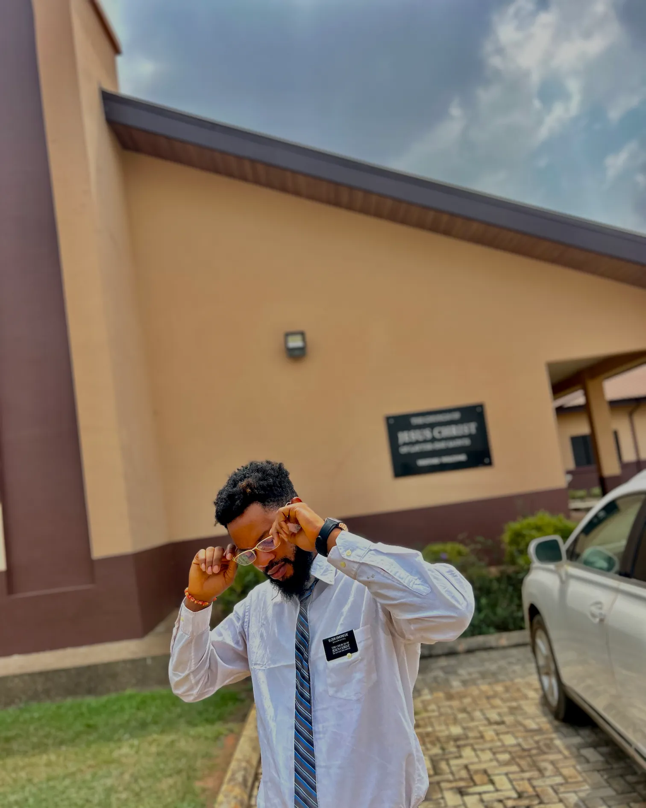

WDD 130 | Omoregie Lawrence Osagie

My name is Omoregie Lawrence Osagie. I am from Nigeria, and I am a student, designer, and entrepreneur. I enjoy learning new things, improving myself, and finding ways to create a better future for myself and my family. I currently work as a Data Entry Specialist. My job has helped me improve my accuracy, attention to detail, communication, and ability to work remotely. I also have experience in customer service and call center work, which has helped me learn how to communicate with people and solve problems. I am currently studying through BYU-Pathway Worldwide. I am learning about technology, business, and programming. Some parts of programming are difficult for me, but I am learning little by little through practice. I'm interested in technology, AI, automation, and software development because I believe they can help me have better career opportunities in the future.